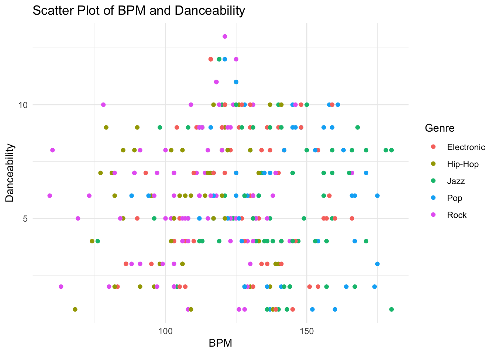
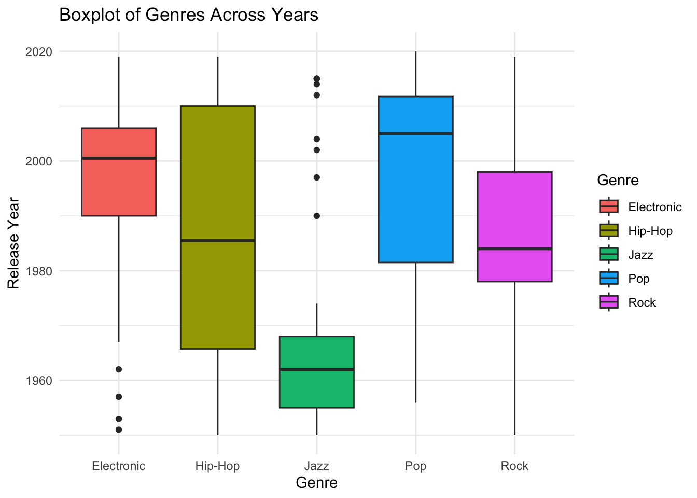

# Set the number of songs and artists
n_songs <- 300
n_artists <- 20
# Create an empty data frame with placeholders for music-related variables
music_data <- data.frame(
SongID = 1:n_songs,
Title = character(n_songs),
Artist = character(n_songs),
Genre = character(n_songs),
BPM = numeric(n_songs),
Danceability = numeric(n_songs),
LengthInSeconds = numeric(n_songs),
ReleaseYear = integer(n_songs),
Rating = numeric(n_songs)
)Data Exercise
Creating the Dataset
Load required packages, and set seed.
# load required packages
library(dplyr)
library(purrr)
library(lubridate)
library(ggplot2)
library(here)
library(httr)
# set seed for reproducibility
set.seed(234)Set number of artists and songs, and create empty dataframe.
Create a vector of artists names, adjectives, and nouns. This will be used to assign an artist name and to generate random song names. (This part was overkill but I thought it was fun.)
# Define a vector of artist names
# I used a random name generator (https://igenerator.net/random-name-generator/artist-name-generator/) to generate names
# I also used this random band name generator (https://rocklou.com/bandnamegenerator)
artist_names <- c("Ophelia Onyx", "Raina Ruby", "Grayson Knight", "Atlas Stonehart", "Indigo Stone",
"Jasper Wolf", "Alex Ace", "Gary Joy", "JTK", "Julian Howard",
"LLAP", "Grey Century", "Coven Atmosphere", "Eternal Symphonies", "The Inner Ethers",
"The Whirlwind", "H.E.A.V.Y", "Orange Vinyl", "Days Of Cities", "Enterprise")
# Ensure there are exactly 20 names in the vector
if(length(artist_names) != 20) {
stop("The number of artist names should be exactly 20.")
}
# Generating random song titles (probably overkill but I think its fun)
# I used this random word generator (https://randomwordgenerator.com)
generate_random_title <- function() {
adjectives <- c("Lame", "Towering", "Ambiguous", "Vagabond", "Limping",
"Quarrelsome", "Guiltless", "Vengeful", "Quirky", "Chief",
"Worried", "Simple", "Redundant", "Charming", "Jobless",
"Impossible", "False", "Significant", "Secretive", "Lackadaisical",
"Alive", "Disillusioned", "Thin", "Legal", "Unhappy",
"Dangerous", "Vivacious", "Important", "Wistful", "Condemned")
nouns <- c("Penalty", "Camera", "Leader", "Membership", "Oven",
"Promotion", "Wealth", "Lake", "Drama", "Map",
"Cabinet", "Quality", "Television", "Guest", "Bath",
"Bonus", "Soup", "Agency", "Insect", "Person",
"Student", "Nation", "Manufacturer", "Player", "Year",
"Consequence", "Meal", "Presence", "Environment", "Criticism")
random_adjective <- sample(adjectives, 1)
random_noun <- sample(nouns, 1)
title <- paste(random_adjective, random_noun, sep = " ")
return(title)
}Generating synthetic data.
# Generate synthetic data for music-related variables
music_data$Title <- replicate(n_songs, generate_random_title())
music_data$Artist <- sample(artist_names, n_songs, replace = TRUE)
music_data$Genre <- sample(c("Pop", "Rock", "Hip-Hop", "Electronic", "Jazz"), n_songs, replace = TRUE)
music_data$BPM <- round(rnorm(n_songs, mean = 120, sd = 20))
music_data$Danceability <- round(pmax(pmin(runif(n_songs, min = 1, max = 10), 10), 1))
music_data$LengthInSeconds <- round(rnorm(n_songs, mean = 240, sd = 30))
music_data$ReleaseYear <- sample(1950:2020, n_songs, replace = TRUE)
music_data$Rating <- round(pmax(pmin(rnorm(n_songs, mean = 3.5, sd = 1), 10), 1))Introducing Dependencies Between Variables
Assigning artists a primary genre.
# Artists produce songs in a primary genre, but occasionally produce songs from other genres
artists <- paste0("Artist", 1:n_artists)
primary_genres <- sample(c("Pop", "Rock", "Hip-Hop", "Electronic", "Jazz"), n_artists, replace = TRUE)
artist_genre_mapping <- data.frame(Artist = artists, PrimaryGenre = primary_genres)
fraction_other_genres <- 0.2
for (i in 1:n_artists) {
artist_songs <- music_data$Artist == artists[i]
primary_genre <- artist_genre_mapping$PrimaryGenre[i]
if (any(artist_songs)) {
num_songs_total <- sum(artist_songs)
num_other_genres <- round(num_songs_total * fraction_other_genres)
other_indices <- sample(which(artist_songs), num_other_genres)
music_data$Genre[other_indices] <- sample(setdiff(c("Pop", "Rock", "Hip-Hop", "Electronic", "Jazz"), primary_genre), num_other_genres, replace = TRUE)
music_data$Genre[setdiff(which(artist_songs), other_indices)] <- primary_genre
}
}Genre effects average BPM.
# Songs in Jazz and Pop genres tend to have higher BPMs
fraction_adjust_bpm_jazz_pop <- 0.8
jazz_pop_indices <- which(music_data$Genre %in% c("Jazz", "Pop") & runif(n_songs) < fraction_adjust_bpm_jazz_pop)
music_data$BPM[jazz_pop_indices] <- music_data$BPM[jazz_pop_indices] + 20
# Songs in the Rock and Hip-Hop genres tend to have lower BPMs
fraction_adjust_bpm_hip_hop <- 0.8
hip_hop_indices <- which(music_data$Genre %in% c("Hip-Hop") & runif(n_songs) < fraction_adjust_bpm_hip_hop)
music_data$BPM[hip_hop_indices] <- music_data$BPM[hip_hop_indices] - 10
fraction_adjust_bpm_rock <- 0.6
rock_indices <- which(music_data$Genre %in% c("Rock") & runif(n_songs) < fraction_adjust_bpm_rock)
music_data$BPM[rock_indices] <- music_data$BPM[rock_indices] - 10Danceability effects ratings. BPM range effects danceability.
# Songs with higher danceability tend to have higher ratings
music_data$Rating[music_data$Danceability > 5] <- music_data$Rating[music_data$Danceability > 5] + 3
# Songs between 115-125 BPM get a boost in danceability
bpm_boost_indices <- which(music_data$BPM >= 115 & music_data$BPM <= 125)
music_data$Danceability[bpm_boost_indices] <- music_data$Danceability[bpm_boost_indices] + 3Genre effects release year.
# Songs in the Rock and Jazz genres tend to be older
fraction_replace_jazz <- 0.7
fraction_replace_rock <- 0.6
jazz_indices <- which(music_data$Genre %in% c("Jazz") & runif(n_songs) < fraction_replace_jazz)
rock_indices <- which(music_data$Genre %in% c("Rock") & runif(n_songs) < fraction_replace_rock)
music_data$ReleaseYear[jazz_indices] <- sample(c(1950:1970), length(jazz_indices), replace = TRUE)
music_data$ReleaseYear[rock_indices] <- sample(c(1970:2000), length(rock_indices), replace = TRUE)
# Songs in the Pop and Electronic genres tend to be newer
fraction_replace_electronic <- 0.6
fraction_replace_pop <- 0.5
electronic_indices <- which(music_data$Genre %in% c("Electronic") & runif(n_songs) < fraction_replace_electronic)
pop_indices <- which(music_data$Genre %in% c("Pop") & runif(n_songs) < fraction_replace_pop)
music_data$ReleaseYear[electronic_indices] <- sample(c(1990:2010), length(electronic_indices), replace = TRUE)
music_data$ReleaseYear[pop_indices] <- sample(c(2000:2020), length(pop_indices), replace = TRUE)Analyzing and Displaying the Data
General summary of data.
# Display the first few rows of the synthetic music dataset
head(music_data) SongID Title Artist Genre BPM Danceability
1 1 Lame Camera Jasper Wolf Pop 167 6
2 2 Charming Camera Jasper Wolf Rock 129 4
3 3 Significant Television The Inner Ethers Rock 100 8
4 4 Legal Penalty The Inner Ethers Hip-Hop 137 2
5 5 Vagabond Membership Indigo Stone Electronic 166 5
6 6 Thin Nation JTK Rock 123 4
LengthInSeconds ReleaseYear Rating
1 228 2019 6
2 213 1959 4
3 245 1979 7
4 238 1971 4
5 226 2009 4
6 264 1970 4Bar plot for genre vs BPM. This is to show the correlation between genre and BPM.
# Bar plot for Genre vs BPM
ggplot(music_data, aes(x = Genre, y = BPM, fill = Genre)) +
geom_bar(stat = "identity") +
labs(title = "Genre vs BPM in Synthetic Music Dataset",
x = "Genre",
y = "BPM") +
theme_minimal()Scatter plot for BPM and danceability. This is to show the correlation between BPM and danceability.
# Scatter plot for BPM and Danceability
ggplot(music_data, aes(x = BPM, y = Danceability, color = Genre)) +
geom_point() +
labs(title = "Scatter Plot of BPM and Danceability",
x = "BPM",
y = "Danceability",
color = "Genre") +
theme_minimal()
Boxplot for ratings across genres.
# Boxplot for Ratings across Genres
ggplot(music_data, aes(x = Genre, y = Rating, fill = Genre)) +
geom_boxplot() +
labs(title = "Boxplot of Ratings Across Genres",
x = "Genre",
y = "Rating",
fill = "Genre") +
theme_minimal()Boxplot for genres across years. This is to show how genre affects release year.
# Boxplot for Genres across Years
ggplot(music_data, aes(x = Genre, y = ReleaseYear, fill = Genre)) +
geom_boxplot() +
labs(title = "Boxplot of Genres Across Years",
x = "Genre",
y = "Release Year",
fill = "Genre") +
theme_minimal()
Bar plot for danceability vs ratings. This is to show the relationship between ratings and danceability.
# Bar plot for Danceability vs Ratings
ggplot(music_data, aes(x = Danceability, y = Rating, fill = factor(Danceability))) +
geom_bar(stat = "identity") +
labs(title = "Bar Graph of Danceability vs Ratings",
x = "Danceability",
y = "Rating") +
theme_minimal()Bar plot for selected artists vs genre. This is to show that artists were assigned a primary genre.
# Selecting only half of the artists for better visibility
selected_artists <- sample(artist_names, n_artists / 2)
# Bar plot for Selected Artists vs Genre
ggplot(music_data[music_data$Artist %in% selected_artists, ],
aes(x = Artist, fill = Genre)) +
geom_bar(stat = "count") +
labs(title = "Bar Graph of Selected Artists vs Genre of Songs Produced",
x = "Artist",
y = "Count",
fill = "Genre") +
theme_minimal() +
theme(axis.text.x = element_text(angle = 45, hjust = 1)) Table of the top rated songs, just for fun.
# Creating a data frame with top-rated songs
top_rated_songs <- music_data[order(music_data$Rating, decreasing = TRUE), ]
# Selecting the top 10 rated songs (you can adjust the number as needed)
top_rated_songs <- head(top_rated_songs, 10)
# Displaying the table with Song Title, Artist, Genre, and Rating
top_rated_songs_table <- data.frame(Song_Title = top_rated_songs$Title,
Artist = top_rated_songs$Artist,
Genre = top_rated_songs$Genre,
Rating = top_rated_songs$Rating)
print(top_rated_songs_table) Song_Title Artist Genre Rating
1 Impossible Player Enterprise Electronic 9
2 Jobless Guest Eternal Symphonies Jazz 8
3 Ambiguous Insect Jasper Wolf Hip-Hop 8
4 Secretive Wealth Raina Ruby Jazz 8
5 Thin Penalty The Inner Ethers Rock 8
6 Redundant Presence Eternal Symphonies Pop 8
7 Thin Wealth Julian Howard Electronic 8
8 Lame Consequence Gary Joy Rock 8
9 Dangerous Leader Jasper Wolf Hip-Hop 8
10 Worried Presence Alex Ace Pop 8Linear model for rating with BPM and danceability as predictors.
This produces a p-value of 2.2e-16 which indicates signifigance.
# Fit a linear model for Rating with BPM and Danceability as predictors.
linear_model <- lm(Rating ~ BPM + Danceability, data = music_data)
summary(linear_model)
Call:
lm(formula = Rating ~ BPM + Danceability, data = music_data)
Residuals:
Min 1Q Median 3Q Max
-3.7677 -1.0787 -0.0488 0.9247 3.0917
Coefficients:
Estimate Std. Error t value Pr(>|t|)
(Intercept) 2.4461375 0.4444838 5.503 8.06e-08 ***
BPM -0.0003266 0.0032833 -0.099 0.921
Danceability 0.4198899 0.0280700 14.959 < 2e-16 ***
---
Signif. codes: 0 '***' 0.001 '**' 0.01 '*' 0.05 '.' 0.1 ' ' 1
Residual standard error: 1.378 on 297 degrees of freedom
Multiple R-squared: 0.4298, Adjusted R-squared: 0.4259
F-statistic: 111.9 on 2 and 297 DF, p-value: < 2.2e-16Linear model for BPM with genre as a predictor.
This produces a p-value of 2.2e-16 which indicates signifigance.
# Fit a linear model for BPM with Genre as a predictor.
linear_model_rating_interaction <- lm(BPM ~ Genre, data = music_data)
summary(linear_model_rating_interaction)
Call:
lm(formula = BPM ~ Genre, data = music_data)
Residuals:
Min 1Q Median 3Q Max
-62.138 -13.686 0.662 14.896 55.325
Coefficients:
Estimate Std. Error t value Pr(>|t|)
(Intercept) 127.000 2.691 47.193 < 2e-16 ***
GenreHip-Hop -17.542 4.037 -4.346 1.91e-05 ***
GenreJazz 11.138 3.732 2.985 0.00308 **
GenrePop 11.720 3.991 2.936 0.00358 **
GenreRock -16.325 3.590 -4.548 7.92e-06 ***
---
Signif. codes: 0 '***' 0.001 '**' 0.01 '*' 0.05 '.' 0.1 ' ' 1
Residual standard error: 20.84 on 295 degrees of freedom
Multiple R-squared: 0.2731, Adjusted R-squared: 0.2632
F-statistic: 27.7 on 4 and 295 DF, p-value: < 2.2e-16Linear model for release year with genre as a predictor.
This produces a p-value of 2.2e-16 which indicates signifigance.
# Fit a linear model for Release Year with Genre as a predictor.
linear_model_genre_year <- lm(ReleaseYear ~ Genre, data = music_data)
summary(linear_model_genre_year)
Call:
lm(formula = ReleaseYear ~ Genre, data = music_data)
Residuals:
Min 1Q Median 3Q Max
-43.617 -11.558 -0.477 11.900 48.523
Coefficients:
Estimate Std. Error t value Pr(>|t|)
(Intercept) 1994.617 2.390 834.638 < 2e-16 ***
GenreHip-Hop -8.992 3.585 -2.508 0.0127 *
GenreJazz -28.140 3.314 -8.491 1.02e-15 ***
GenrePop 3.483 3.545 0.983 0.3266
GenreRock -8.058 3.188 -2.528 0.0120 *
---
Signif. codes: 0 '***' 0.001 '**' 0.01 '*' 0.05 '.' 0.1 ' ' 1
Residual standard error: 18.51 on 295 degrees of freedom
Multiple R-squared: 0.2655, Adjusted R-squared: 0.2555
F-statistic: 26.65 on 4 and 295 DF, p-value: < 2.2e-16